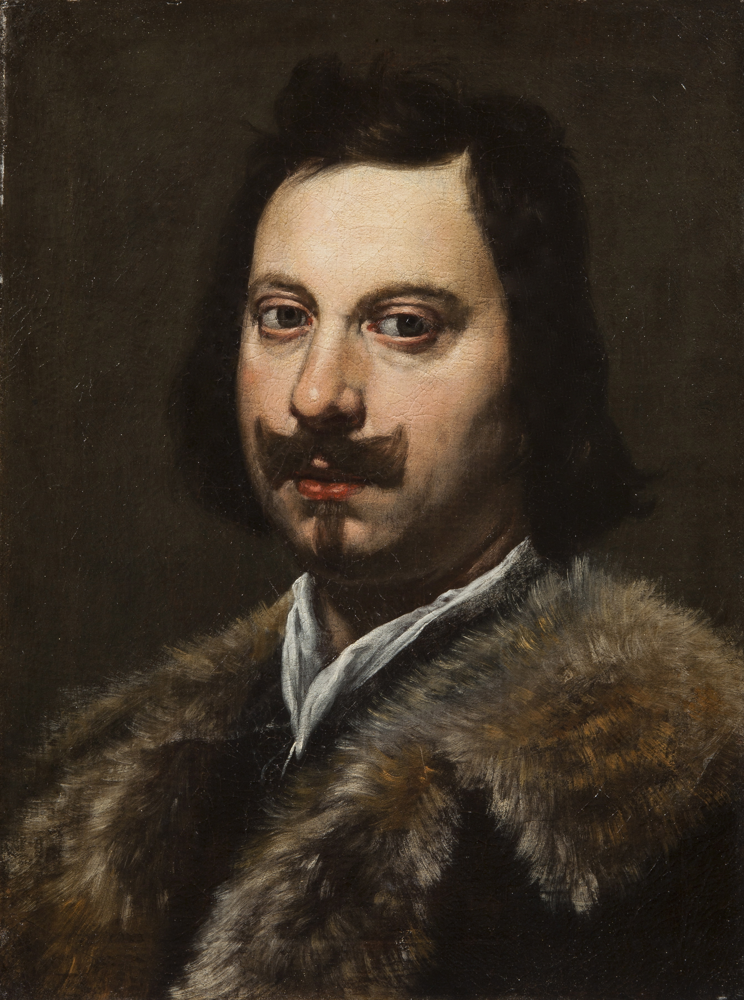

The Beginning of Atmospheric Science
Evangelista Torricelli, an Italian physicist, created the first mercury barometer in 1643. This invention was revolutionary as it proved that air has weight.
Torricelli's barometer used mercury, a dense liquid, to measure atmospheric pressure. This was a groundbreaking discovery that laid the foundation for modern meteorology and atmospheric science.
